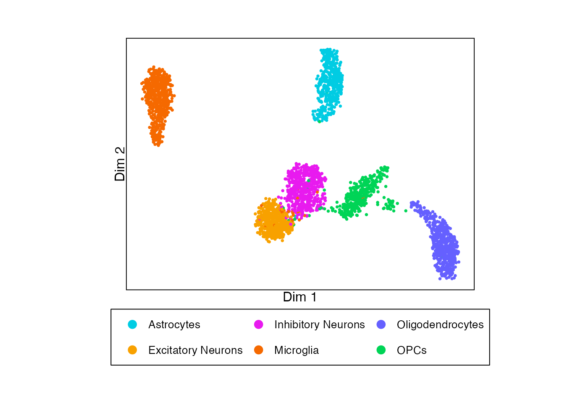
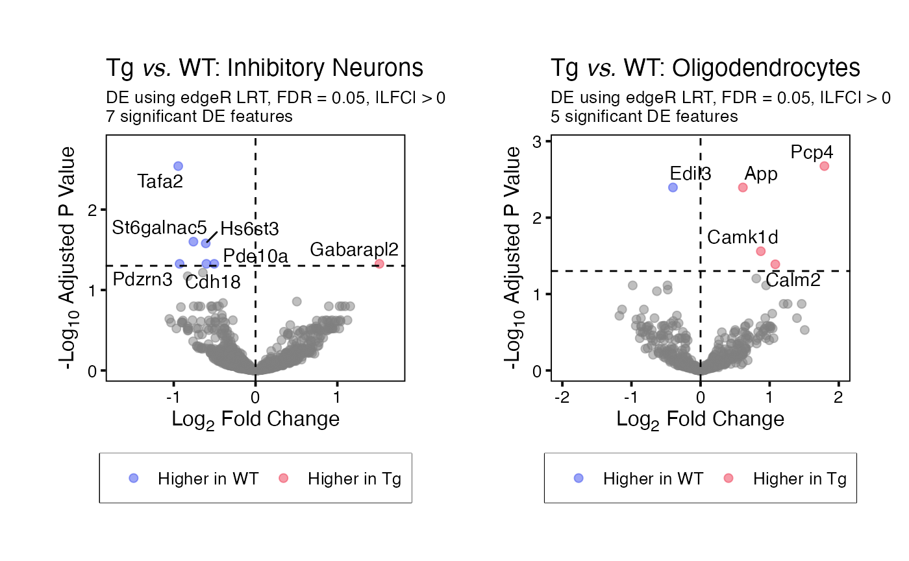
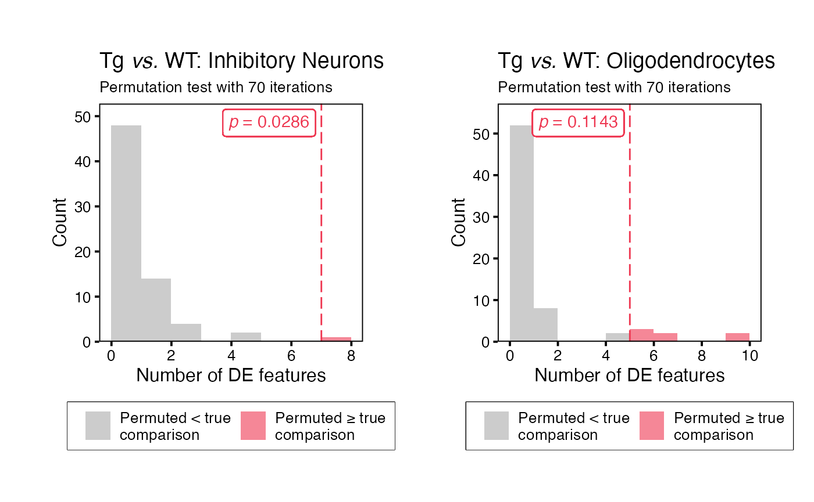
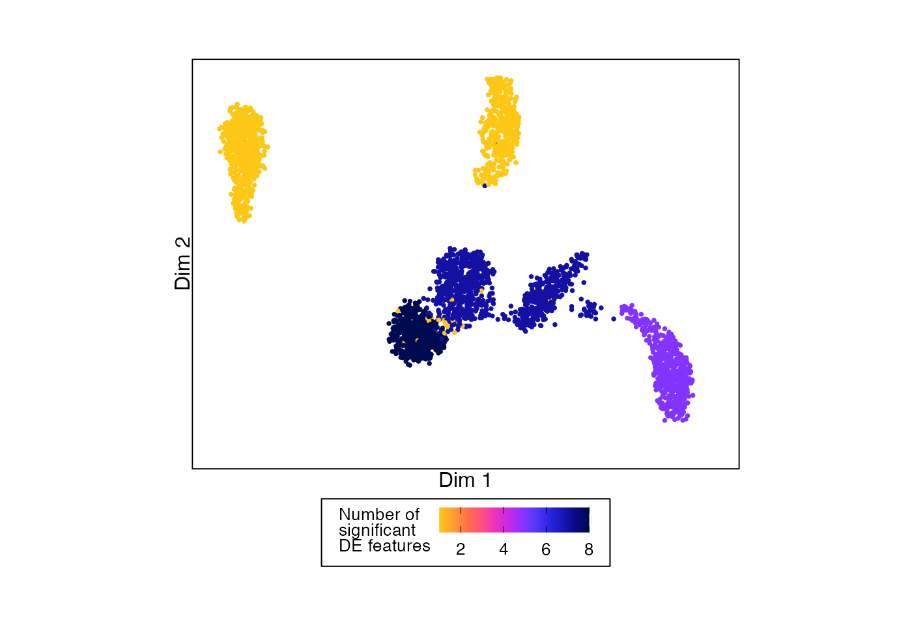
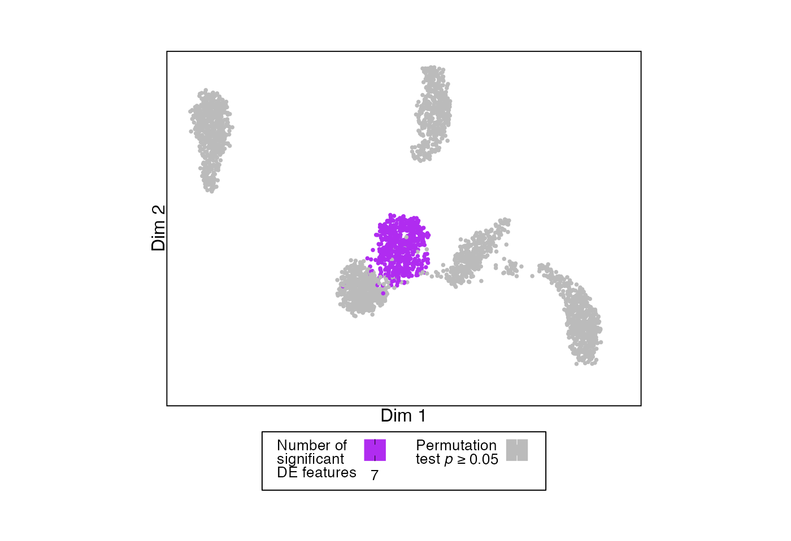
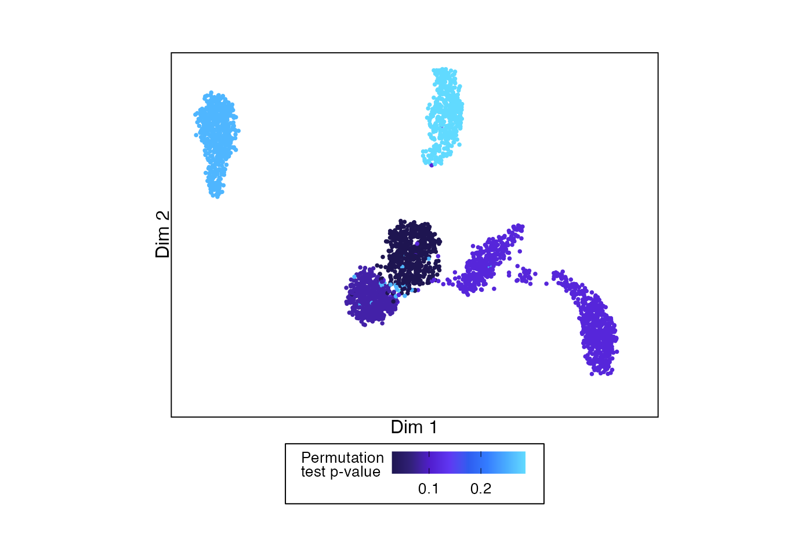
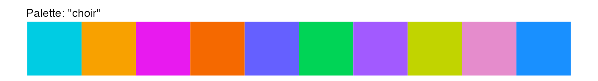

Installation
permuteDE is designed to be run on Unix-based operating systems such as macOS and linux.
permuteDE installation currently requires remotes and
BiocManager for installation of GitHub and Bioconductor
packages. Run the following commands to install the various dependencies
used by permuteDE:
First, install remotes (for installing GitHub packages) if it isn’t already installed:
if (!requireNamespace("remotes", quietly = TRUE)) install.packages("remotes")Then, install BiocManager (for installing bioconductor packages) if it isn’t already installed:
if (!requireNamespace("BiocManager", quietly = TRUE)) install.packages("BiocManager")Then, install permuteDE:
remotes::install_github("corceslab/permuteDE", ref="main", repos = BiocManager::repositories(), upgrade = "never")Introduction
This tutorial provides a basic example of how to run permuteDE, an R package intended to help users assess which differential expression comparisons can be trusted and which should be met with skepticism.
permuteDE is applicable to any sequencing data suitable for differential expression analysis. It takes as input a Seurat object, SingleCellExperiment object, or matrix (see Advanced Options for details about input object types). Detailed parameter definitions are available under the Functions tab.
Differential expression analyses are susceptible to false positives, and it can be difficult to prioritize the most robust results for further study. permuteDE is based on the premise that the differential expression results that are most likely to be validated in subsequent experiments come from comparisons that have a higher number of significant differentially expressed features than would be expected by chance. The use of permutation testing allows permuteDE to generate a distribution estimating how many false positive significant differentially expressed features occur by chance alone.
permuteDE proceeds in two main steps. First, the user will use
function runDE() to run differential expression analysis
using one of the several available methods. Second, these results are
then passed to the permuteDE() function, which performs the
permutation test.
You’ll need the following packages installed to run this tutorial:
Input data
permuteDE takes as input a Seurat, SingleCellExperiment, or matrix. If a matrix is provided, it may be either a cell-level matrix or a pre-generated pseudobulk matrix. This tutorial uses a Seurat object; for details related to other object types, see Advanced Options. permuteDE expects raw counts, and normalization is performed during the differential expression analysis depending on the selected method.
To demonstrate how to run permuteDE, we’ll use a small sample dataset consisting of mouse brain snRNA-seq data, stored as a Seurat object.
# Load dataset from permuteDE package
data("sample_data")
# Seurat object containing a count matrix, UMAP coordinates, and cell metadata
plotDimReduction(reduction = sample_data@reductions$umap@cell.embeddings,
split_labels = sample_data$cell_type,
color_by = "split")
Running permuteDE
permuteDE proceeds in two main steps, each corresponding to a
function: (1) runDE() and (2) permuteDE().
Step 1: runDE()
Function runDE() will run differential expression
analysis to compare two groups.
By default, runDE() will generate pseudobulk matrices
using the metadata provided to parameters replicate_labels
(representing each biological replicate) and, optionally,
split_labels (representing a further division of the data,
often cell types). The pseudobulk matrices will be returned as part of
the output of runDE(), but they can also be extracted
separately using function getPseudobulk().
Alternately, users may opt to run cell-level tests instead of
pseudobulk tests (set parameter pseudobulk to “none”) or to
provide pre-generated pseudobulk matrices (set parameter
pseudobulk to “supplied”). See Advanced
Options for more details.
Function runDE() allows the user to run several
different methods of differential expression analysis, by adjusting
parameters de_method and de_test:
-
edgeR: “LRT”, “QLF”, “exact” -
DESeq2: “LRT”, “Wald” -
limma: “trend”, “voom”, “wilcox_cpm”, “wilcox_cpm_log” -
presto: “wilcox_cpm”, “wilcox_cpm_log”
By default, runDE() will run differential expression
analysis using edgeR LRT. The precise execution of the
differential expression analysis can be further adjusted using parameter
de_params to pass further parameters to the selected
method. This function is parallelized when multiple splits are assessed,
so efficiency improves as n_cores is increased, up to the
number of splits.
runDE_output <- runDE(object = sample_data,
replicate_labels = "sample",
group_labels = "group",
split_labels = "cell_type",
reference_group = "WT",
n_cores = 2)
#> 2025-10-05 14:49:44 : Generating 6 pseudobulk matrices..
#> 2025-10-05 14:49:44 : Fetching feature x cell matrix using 'RNA' assay and 'counts' layer..
#> Excluded between 19.43% (340 features) and 69.6% (1218 features) of features in each split.
#> Highest % of features were excluded in split 'Microglia'.
#> Excluded between 1.89% (6632 reads) and 21.72% (49437 reads) of reads in each split.
#> Highest % of reads were excluded in split 'Microglia'.
#> 2025-10-05 14:49:44 : Running DE on 6 matrices..The output is a list containing the following elements:
-
DE_resultsDataframe containing DE results for each feature, by split -
PB_valuesIf using pseudobulk data, a list of feature x replicate matri(ces) containing pseudobulk values for each feature, one matrix per split -
cell_valuesAlternately, if using cell-level data, a list of feature x cell matri(ces) containing counts for each feature, one matrix per split -
metadataList recording characteristics of the data and runtime -
parametersList recording parameter values used
head(runDE_output$DE_results)
#> gene lfc pvalue padj split
#> 1 Stmn1 2.1530904 7.127649e-05 0.04077015 Astrocytes
#> 2 Pan3 -1.5612588 2.635217e-04 0.07536720 Astrocytes
#> 3 Slc4a4 -0.6058453 9.404665e-04 0.17931562 Astrocytes
#> 4 Pcsk2 1.7141881 1.798391e-03 0.25716996 Astrocytes
#> 5 Rpl3 1.4697542 2.957641e-03 0.32330591 Astrocytes
#> 6 Fat3 -0.8415779 3.565231e-03 0.32330591 AstrocytesStep 2: permuteDE()
Function permuteDE() will take the output from function
runDE(), permute the group labels and rerun differential
expression analysis in the same way across a number of iterations set by
parameter n_iterations. The parameters are inherited from
the runDE() function call. For each iteration, the number
of significant differentially expressed features is counted, forming a
distribution to which the “true” number of significantly differentially
expressed features is compared using a permutation test. This
permutation test yields a p-value that suggests the probability of
observing a number of significant features greater than or equal to the
one output by the runDE() function if the two groups are
not truly different.
The default number of iterations (set by parameter
n_iterations) is 1000. However, for smaller datasets such
as this one where the number of possible combinations of group labels is
less than 1000, the permutation test is run using all possible
combinations with no repeats. This function is highly parallelized, so
efficiency greatly improves as n_cores is increased.
permuteDE_output <- permuteDE(input = runDE_output,
n_cores = 2)
#> 2025-10-05 14:49:45 : Differential expression results for group WT vs. Tg across 6 pseudobulk matrices..
#> 2025-10-05 14:49:45 : Generating 70 of 70 possible combinations for split Astrocytes (1/6)..
#> 2025-10-05 14:49:45 : Running 70 permutations for split Astrocytes (1/6)..
#> 2025-10-05 14:49:47 : Generating 70 of 70 possible combinations for split Excitatory Neurons (2/6)..
#> 2025-10-05 14:49:47 : Running 70 permutations for split Excitatory Neurons (2/6)..
#> 2025-10-05 14:49:51 : Generating 70 of 70 possible combinations for split Inhibitory Neurons (3/6)..
#> 2025-10-05 14:49:51 : Running 70 permutations for split Inhibitory Neurons (3/6)..
#> 2025-10-05 14:49:55 : Generating 70 of 70 possible combinations for split Microglia (4/6)..
#> 2025-10-05 14:49:55 : Running 70 permutations for split Microglia (4/6)..
#> 2025-10-05 14:49:58 : Generating 70 of 70 possible combinations for split Oligodendrocytes (5/6)..
#> 2025-10-05 14:49:58 : Running 70 permutations for split Oligodendrocytes (5/6)..
#> 2025-10-05 14:50:00 : Generating 70 of 70 possible combinations for split OPCs (6/6)..
#> 2025-10-05 14:50:00 : Running 70 permutations for split OPCs (6/6)..The output is a list containing the following elements:
-
permutation_test_resultsDataframe containing the permutation test results by split -
permutation_DE_summaryDataframe containing the permutation DE summary metrics by split -
permutation_DE_resultsIf parameterreturn_allisTRUE, dataframe DE results for each feature, by split, for each iteration (note that this substantially increases the size of the output) -
metadataList recording characteristics of the data and runtime -
parametersList recording parameter values used
head(permuteDE_output$permutation_DE_summary)
#> split permutation reference_group_overlap non_reference_group_overlap
#> 1 Astrocytes 1 0.25 0.25
#> 2 Astrocytes 2 0.75 0.75
#> 3 Astrocytes 3 0.75 0.75
#> 4 Astrocytes 4 0.50 0.50
#> 5 Astrocytes 5 0.50 0.50
#> 6 Astrocytes 6 0.75 0.75
#> n_sig min_lfc_sig max_lfc_sig min_lfc_all max_lfc_all
#> 1 4 -3.472168 -1.116157 -3.472168 1.391549
#> 2 1 1.839246 1.839246 -1.342398 1.839246
#> 3 0 NA NA -1.392288 1.878978
#> 4 0 NA NA -1.496774 1.639203
#> 5 0 NA NA -3.156099 1.541848
#> 6 0 NA NA -1.187755 1.699554Plot
permuteDE has several built-in plotting functions to help display the
results from functions runDE() and
permuteDE(). All plots are modifiable ggplot
outputs.
To generate volcano plots for each split assessed by
runDE() (or a single split) use function
plotVolcano().
# Generate a list of volcano plots
volcano_plots <- plotVolcano(input = runDE_output)
# Display examples
volcano_plots[["Inhibitory Neurons"]] | volcano_plots[["Oligodendrocytes"]]To generate histograms for each permutation test (or a single split),
use function plotHistogram(). These histograms display the
distribution of the number of significant differentially expressed
features in each iteration of the permutation test, and a dashed line
where the “true” results fall on this distribution.
# Generate a list of histograms
histogram_plots <- plotHistogram(input = permuteDE_output)
# Display examples
histogram_plots[["Inhibitory Neurons"]] | histogram_plots[["Oligodendrocytes"]]
One way to summarise the results from permuteDE is to color a UMAP by the number of differentially expressed features in each split (in this case, cell type).
# Example UMAP showing number of DE features for each split
plotDimReduction(reduction = sample_data@reductions$umap@cell.embeddings,
input = permuteDE_output,
split_labels = sample_data$cell_type,
color_by = "n_sig")
In this plot, cell types are grayed out if the permutation test p-value was > 0.05.
# Example UMAP showing number of DE features for each split that passes permutation testing threshold
plotDimReduction(reduction = sample_data@reductions$umap@cell.embeddings,
input = permuteDE_output,
split_labels = sample_data$cell_type,
color_by = "n_sig",
permutation_test_alpha = 0.05)
Or we can color by the p-values from the permutation test.
# Example UMAP showing permutation testing p-value for each split
plotDimReduction(reduction = sample_data@reductions$umap@cell.embeddings,
input = permuteDE_output,
split_labels = sample_data$cell_type,
color_by = "pvalue")
To plot the results for a single feature, use function
plotFeature(). By default, this function will apply CPM
normalization (using edgeR::cpm()), but this can be changed
using the parameter normalization_method.
# Generate a list of plots
feature_plots <- plotFeature(input = runDE_output,
feature = "App",
use_splits = c("Inhibitory Neurons", "Oligodendrocytes"))
# Display examples
feature_plots[["Inhibitory Neurons"]] | feature_plots[["Oligodendrocytes"]]
Advanced Options
Input object types for function runDE()
Seurat
For Seurat objects, the “RNA” assay is used if no input is provided
for parameter use_assay. If no input is provided for
parameter use_slot, the “counts” default slot (Seurat v4)
or layer (Seurat v5) is used.
Some Seurat v5 objects have multiple layers (e.g., “counts.1”, “counts.2”, “counts.2”..) with different subsets of cells stored under the same assay. Currently, permuteDE requires a single layer containing all cells in an assay. For these cases, please re-organize the Seurat object prior to running permuteDE.
For Seurat objects, the input to parameters
replicate_labels, group_labels, and
split_labels may be either a string indicating the name of
the metadata column containing the labels or a character vector
containing the labels in the same order as the cells.
SingleCellExperiment
For SingleCellExperiment objects, only the use_assay
parameter is needed. If not provided, it is set to “counts”. Please
ensure that the relevant assay matrix includes both row and column
names.
For SingleCellExperiment objects, the input to parameters
replicate_labels, group_labels, and
split_labels may be either a string indicating the name of
the metadata column containing the labels or a character vector
containing the labels in the same order as the cells.
Matrix input
For matrix inputs, the provided matrix may be either a cell-level matrix (feature x cell) or a pre-generated pseudobulk matrix (feature x replicate). All permuteDE functions expect raw counts.
If a pre-generated pseudobulk matrix is provided, parameter
pseudobulk must be set to “supplied”.
For matrix inputs, the input to parameters
replicate_labels, group_labels, and
split_labels must be a character vector containing the
labels in order, corresponding to each column of the matrix.
Here’s an example of how to apply function runDE() to a
feature x cell matrix:
# Extract count matrix from the sample dataset
counts_matrix <- sample_data@assays$RNA$counts
# Extract relevant metadata as a vector
replicates <- sample_data$sample
groups <- sample_data$group
splits <- sample_data$cell_type
# Run
runDE_output <- runDE(object = counts_matrix,
replicate_labels = replicates,
group_labels = groups,
split_labels = splits,
reference_group = "WT",
n_cores = 2)
#> 2025-10-05 14:50:06 : Generating 6 pseudobulk matrices..
#> Excluded between 19.43% (340 features) and 69.6% (1218 features) of features in each split.
#> Highest % of features were excluded in split 'Microglia'.
#> Excluded between 1.89% (6632 reads) and 21.72% (49437 reads) of reads in each split.
#> Highest % of reads were excluded in split 'Microglia'.
#> 2025-10-05 14:50:06 : Running DE on 6 matrices..Or a pre-generated pseudobulk matrix:
# Pre-generate pseudobulk matrix
pb_matrix_list <- getPseudobulk(object = sample_data,
replicate_labels = "sample",
split_labels = "cell_type",
n_cores = 2)
#> 2025-10-05 14:50:06 : Generating 6 pseudobulk matrices..
#> 2025-10-05 14:50:06 : Fetching feature x cell matrix using 'RNA' assay and 'counts' layer..
#> Excluded between 19.43% (340 features) and 69.6% (1218 features) of features in each split.
#> Highest % of features were excluded in split 'Microglia'.
#> Excluded between 1.89% (6632 reads) and 21.72% (49437 reads) of reads in each split.
#> Highest % of reads were excluded in split 'Microglia'.
pb_matrix <- pb_matrix_list$PB_values[["Oligodendrocytes"]]
# Extract relevant metadata as a vector
replicates <- colnames(pb_matrix)
groups <- sample_data$group[match(replicates, paste0("rep_", sample_data$sample))]
# Run
runDE_output <- runDE(object = pb_matrix,
replicate_labels = replicates,
group_labels = groups,
reference_group = "WT",
pseudobulk = "supplied",
n_cores = 1)
#> 2025-10-05 14:50:06 : Extracting 1 pseudobulk matrix..
#> 2025-10-05 14:50:06 : Running DE on 1 matrix..permuteDE parameters
Significance level & multiple comparison correction
The default significance level used by permuteDE is
alpha = 0.05 with multiple comparison correction using FDR
= 0.05. The method of multiple comparison correction can be changed
using parameter p_adjust_method (for permitted values, see
stats::p.adjust.methods). By default, permuteDE also
requires that significant differentially expressed features have a |LFC|
> 0.5 (parameter lfc_threshold).
Filters
permuteDE uses various filters to reduce the number of DE comparisons:
- Parameter
min_cells_per_splitindicates the minimum number of cells within one split. Defaults to 100. - Parameter
min_replicates_per_splitindicates minimum number of distinct replicates represented within one split. Defaults to 6. - Parameter
min_replicates_per_groupindicates the minimum number of distinct replicates represented within each of the two comparison groups. Defaults to 3. - Parameter
min_cells_per_featureindicates the minimum number of cells (within a split) with expression of a feature. Defaults to 10. - Parameter
min_prop_cells_per_featureindicates the minimum proportion of cells (within a split) with expression of a feature. Defaults to 0.1.
Pseudobulk vs. cell-level tests
We highly encourage users to use pseudobulk differential expression
analysis, as it reduces the incidence of false positives. However,
permuteDE is also compatible with cell-level tests. To run function
runDE() without pseudobulking, and treating the cells as
the statistical sample size, set parameter pseudobulk to
“none”. This works with any input object type, including cell x feature
matrices. Please note that the size of the returned output will be
substantially larger, since the cell x feature matrices will be returned
as output so that they can be subsequently passed to function
permuteDE().
When running cell-level tests, we still recommend that users provide
the biological replicate labels to function runDE() using
parameter replicate_labels. These labels are not used when
running function runDE() with parameter
pseudobulk = "none", but they are passed on to function
permuteDE(), such that when the group labels are permuted,
cells from each biological replicate are not separated. In other words,
the permutation occurs at the replicate level, even for cell-level
tests.
In the rare case when a user wants to permute cells regardless of the
biological replicate, simply set replicate_labels equal to
the cell IDs.
Palettes
Four color palettes are included in this package. They can be called
using function permuteDEpalette(), and setting parameter
swatch to TRUE will display the palette.
permuteDEpalette(type = "discrete",
n = 10,
palette_name = "choir",
swatch = TRUE)